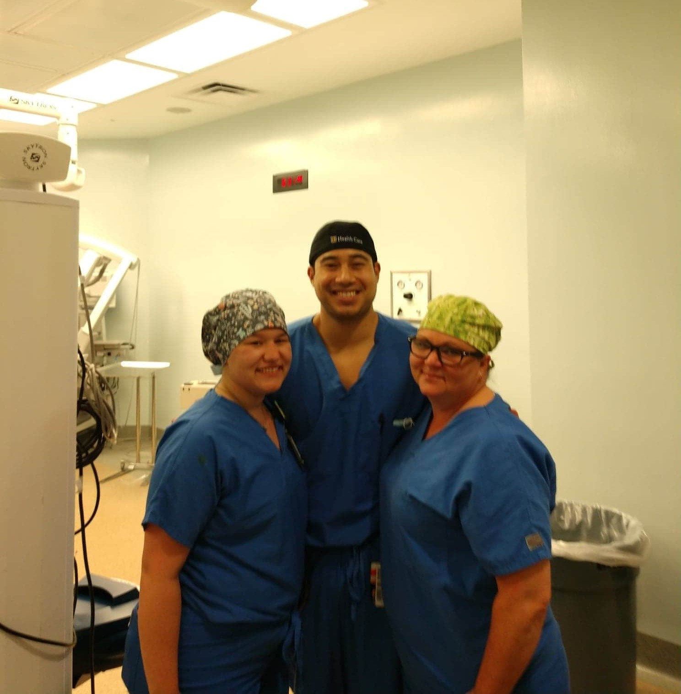
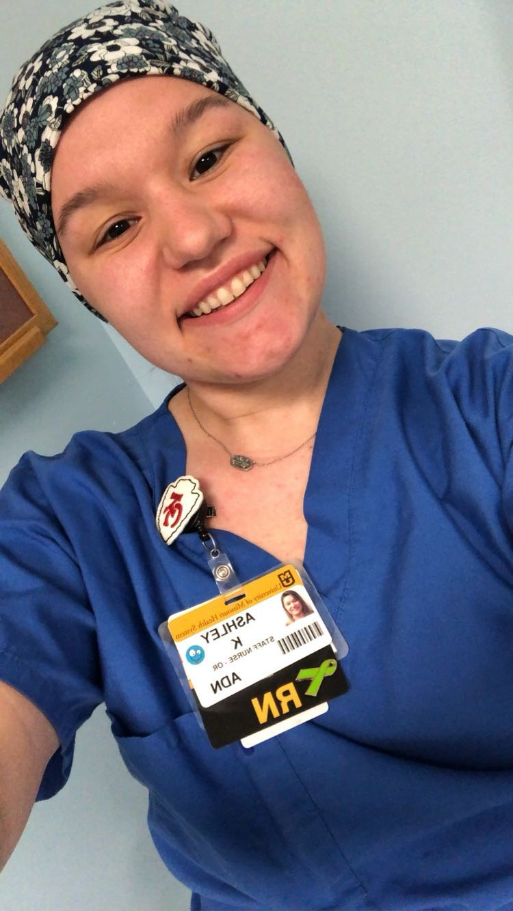

Staff Nurse • July 2019 - July 2020
As a staff nurse in the operating room, I ensure safe and efficient patient care during surgical procedures. Responsibilities include preparing the operating room, assisting the surgical team, monitoring vital signs, and maintaining aseptic technique. I provide patient advocacy, emotional support, and education throughout the surgical experience. Additionally, I contribute to quality improvement initiatives and adhere to evidence-based practices to enhance patient outcomes. My goal is to uphold the highest standards of patient safety and professionalism while collaborating with the surgical team to deliver optimal care.

